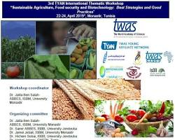

Crop Selection

Crop rotation is an agricultural practice that involves systematically changing the type of crops grown in a particular field over time. It is based on the principle that different crops have varying nutrient requirements and interact with the soil in different ways. Crop rotation offers several benefits for both plant health and soil fertility
Project Overview
Sustainable agriculture is a way of farming that meets the needs of the present without compromising the ability of future generations to meet their own needs. It is about producing food and other agricultural products in a way that protects the environment, human health, and animal welfare.

Sustainable agriculture is important because it helps to:
- Protect our natural resources, such as soil, water, and air
- Reduce greenhouse gas emissions and help to mitigate climate change
- Support the health and well-being of farmers and farmworkers
Project Goals
The Art and Science of Agriculture project has three main goals:
- To increase awareness of the importance of sustainable agriculture
- To inspire individuals and communities to take action towards sustainable agriculture
- To envision a more sustainable future for agriculture
Read More
Project Goals
The Art and Science of Agriculture project will carry out a variety of activities to achieve its goals, including:
- Developing and showcasing art that explores themes of sustainable agriculture, such as paintings, sculptures, photographs, and films
- Conducting workshops and educational programs on sustainable agriculture for farmers, students, and the general public
- Creating a community platform for sharing ideas and resources on sustainable agriculture, such as a website and social media pages